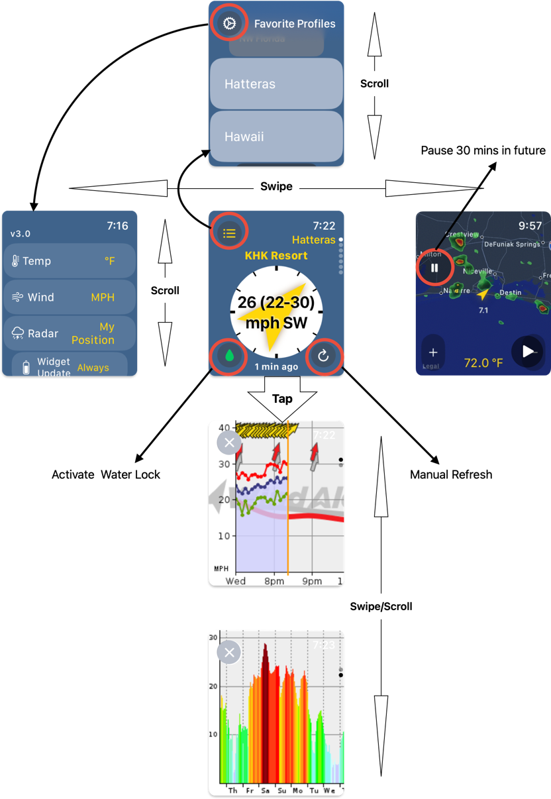

WF Watch App by Randy Casburn
Where Can I Find This App?
WF Watch App by Randy Casburn
Where Can I Find This App?
 WF Watch App Instructions
WF Watch App Instructions
First Launch:
Step 1: Log in
Use your WeatherFlow account credentials from your Life Style App to log in:

How to find stored passwords on Mac or Safari
How to find stored passwords on Chrome
Step 2: Initial Settings
Select your measurement choices in the settings screen:

Step 3: Setup WaterLock (optional)
Press the green water drop button on the bottom left of the main screen:

- Tap
Review - Select
All Requested Data Below - Scroll and Tap
Next - Select
All Requested Data Below - Scroll and Tap
Done - Close and reopen the app ( How to Close an App )
Subsequent Launches:
Logging In:
You should automatically be logged since the app securely stores your credentials in the keychain. It's possible that you've been logged out by Weatherflow. If so, follow the instructions for logging in above.
App Navigation
The main screen with the compass and wind speed is a scrollable list of the weather stations (spots) that have been recorded in your Favorites Profiles in your WeatherFlow app or web site.
The map and chart views are station specific. Scroll to the station of choice and the other views change to reflect data from the selected station.
